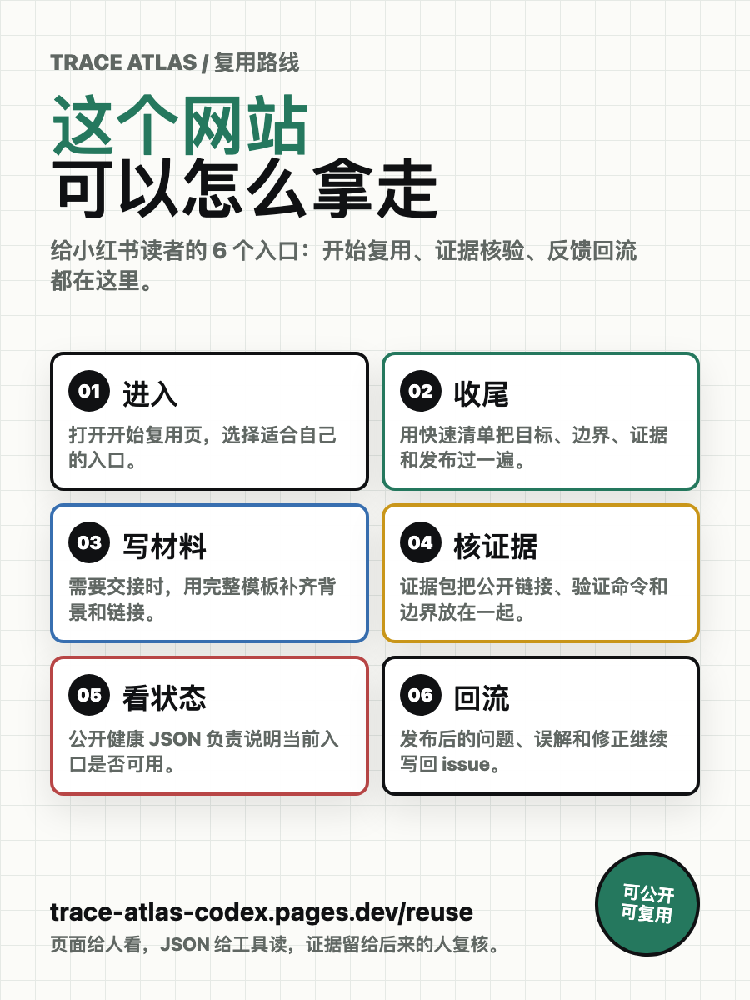
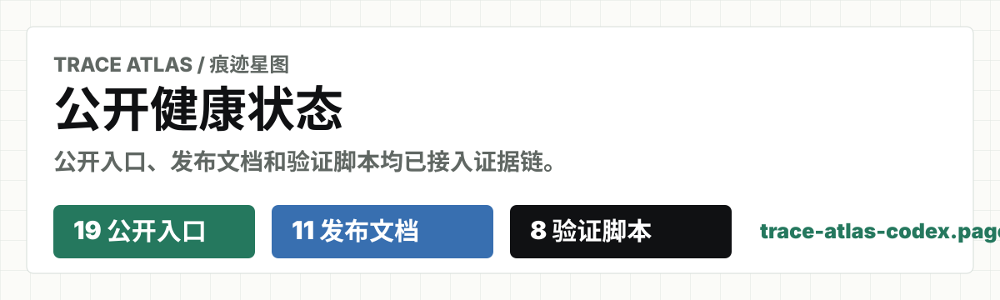

公开健康状态
31 个公开入口
主作品、开始复用、复用路线、路线图、材料总览、自检页、发布记录 JSON 模板、4 个行动包页面、发布草稿、回流模板、证据包、报告、工作日志和仓库都已串起来。
Trace Atlas / 痕迹星图
这里集中放置面向中文传播的首图、分享卡、发布草稿、回流模板、证据包和验证入口。
公开健康状态
主作品、开始复用、复用路线、路线图、材料总览、自检页、发布记录 JSON 模板、4 个行动包页面、发布草稿、回流模板、证据包、报告、工作日志和仓库都已串起来。
传播素材
首图、路线图长图、复用流程图、网页分享卡、公开健康徽章和 4 张行动包分享卡都能直接打开。
自动检查
结构、运行时、发布材料、材料 API、行动包、行动包页面、时间线、验证摘要和公开边界都会随 npm run check 一起检查。
机器可读
小红书首图
用于第一张图，直接说明“我把 AI 会话做成了网站”。
 下载封面 PNG
下载封面 PNG
路线图长图
用于第二张或第三张图，解释“AI 会话公开化”到底怎么做。
 下载路线图 PNG
下载路线图 PNG
复用流程图
用于第二张或第三张图，解释读者点进来后可以拿走什么。

下载复用流程图 PNG网页分享卡片
用于 Open Graph 和链接预览，让公开页面被转发时有明确视觉。
 打开分享卡 SVG
打开分享卡 SVG
公开健康徽章
用于 README、帖子补图或外部页面，直接展示当前公开证据状态。

打开健康徽章 SVG行动包分享卡
用于把阅读、发布、复用和验证拆成独立入口，方便帖子或外链直接指向一个任务。
 打开发帖包分享卡
打开发帖包分享卡
推荐标题
短、直观，第一眼就知道产物是什么。
正文终稿
发布后回流
主公开链接
验证入口
证据包
工作日志
推荐标签
#AI工具 #内容创作 #CloudflarePages
复制台已就绪。
发布前检查